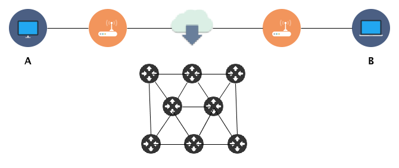

Camada de Rede
Prosseguindo os estudos, já vimos que cada camada prôve serviços para a camada superior e utiliza-se dos serviços fornecidos pelas camadas inferiores para enviar os dados de um lado para o outro. A camada de rede é responsável por:
- Endereçamento
- Roteamento
- Interconexão
- Encapsulamento
- Fragmentação
A camada física é responsável por transportar bits, a camada de enlace transporta quadros (frames) entre os nós (nodes) e a camada de rede transporta datagramas entre hosts. Utilizando-se da camada de enlace, agora conseguimos enviar dados entre host que estão separados entre si, mas conectados através de muitos outros dispositivos e tecnologias diferentes no caminho. A preocupação na camada de enlace é a ligação entre os nós, agora na camada de rede, utilizando a conexão entre diversos nós, é possível criarmos caminhos. Na figura abaixo, temos o exemplo da comunicação entre A e B.

Como observamos na figura, para nós usuários, o caminho percorrido dos dados é transparente quando saem do ponto A ao ponto B. Mas os datagramas podem percorrer diversos caminhos, logo, não podemos garantir que o caminho será igual para todos. Os caminhos podem ser definidos de forma estática ou automaticamente.
A camada de rede recebe o pacote da camada de transporte, encapsula o pacote em um datagrama da camada de enlace e repassa para camada abaixo. Os nós intermediários na comunicação, desencapsulam os frames, os datagramas e analisam os pacotes no nível de rede, para então encaminhar os dados para outro ponto, ou enviam o payload para a camada superior continuar o tratamento da informação.
É comum definirmos e confundirmos a camada de rede com o protocolo Internet Protocol (IP), mas veremos que existem outros protocolos, como ARP, ICMP, IPSec e outros.
Serviços da camada de rede
Como já discutimos, cada camada prôve serviços para a camada superior, e no caso da camada de rede os serviços são: Empacotamento, Endereçamento, Roteamento, Interconexão, e Fragmentação.
Empacotamento
Empacotamento ou Encapsulamento é considerado por alguns autores a principal tarefa da camada de redes, e consiste no encapsulamento da carga útil (payload) em um pacote da camada de rede na origem e o desencapsulamento no destino, não havendo a utilização o payload, nem a alteração do seu conteúdo.
A única alteração possível é a fragmentação do pacote. Caso o pacote seja fragmentado, a camada de rede é a encarregada de aguardar o recebimento de todos, reorganizá-los e entregar para a camada superior.
O host de origem, recebe os dados da camada de cima, adiciona no cabeçalho endereço de origem e destino, e outras informações (discutidas adiante) e o payload, encapsula e entrega para a camada de enlace. Nenhum host ou roteador durante o percurso possui permissão para alterar qualquer campo; apenas acessar os campos para efetuar a comparação do pacote com o endereço de destino, para encaminha-lo ou passar para a camada superior.
Roteamento
O Roteamento é um serviço considerada tão importante quanto o Empacotamento. É a tarefa de encontrar a melhor rota entre a origem e o destino, pois como estudamos, existem diversas rotas de diferentes tipos de tecnologias entre a origem e o destino. O roteamento utiliza-se de alguns protocolos de roteamento, que mapea os vizinhos e possui algumas políticas para manter a lista sempre atualizado.
Encaminhamento
É a ação própriamente dita que o cada roteador toma baseado na tabela de roteamento ou tabela de encaminhamento. Quando um datagrama é recebido, ele deve encaminhar para a rede (unicast) ou as redes (multicast) as quais ele esta conectado. O roteador acessa o cabeçalho para buscar o endereço de destino ou alguma outra informação, para determinar o interface de saída correspondente na tabela de roteamento.
Controle de erros
Como o datagrama pode ser fragmentado em cada roteador, a verificação de erros se torna ineficiente na camada de redes. Mas, existe um checksum do cabeçalho, para controle e prevenção de erros.
Controle de fluxo
Inexiste um controle de fluxo na camada de redes. Uma vez que o datagrama está pronto, ele é enviado sem preocupação se o destino terá capacidade de receber. Uma das razões é a simplicidade que esta camada foi projetada. A camada de enlace possui um controle de acesso ao meio, como forma de controle do fluxo também, mas em um nível abaixo, logo é um serviço que a camada de rede não precisa se preocupar.
Outro motivo, é a utilização de buffers na camada de aplicação, que não consomem os dados simultaneamente a sua recepção. Desta forma, o receptor armazena dado suficiente para sua utilização posterior.
Controle de congestionamento
O controle de congestionamento ocorre quando um número muito grande de datagramas fica concentrado em algum ponto. Tal efeito pode ser causado pelo envio elevado de datagramas à capacidade da rede ou dos roteadores, ocasionando na perda ou descarte dos datagramas, podendo surtir um efeito de colapso, dependendo da situação.
Qualidade de Serviço
Com os diversos tipos de serviços e mídias trocadas, a qualidade de serviço passou a ser discutida, especialmente por causa das aplicações de comunicação em tempo real de áudio e vídeo. Para manter a simplicidade da camada de rede, tal funcionalidade é na maioria das vezes implementada em camadas superiores.
Segurança
Nunca foi uma preocupação, pois quando a Internet foi concebida, era utilizada por um pequeno grupo de usuários, na sua maioria do meio acadêmico, e portanto, foi projetada sem funcionalidades para segurança. No entando, com a dimensão alcançada atualmente e a sua importância, a segurança é um "big deal". Para isto, na camada de redes, o IPSec foi proposto.
Comutação
Comutação é uma expressão herdada de circuitos, é o simples ato de trocar a direção do sinal elétrico, no nosso caso, trocar a direção dos datagramas. O roteador cria uma ligação entre uma porta de entrada e uma(s) porta(s) de saída(s). Podemos dividir a comutação em duas abordagens:
- Comutação de pacotes
- Comutação de circuitos
O dispositivo de origem envia uma mensagem que é fragmentada em diversos pacotes, e o destino recebe um a um, e aguarda todos os pacotes de uma mesma mensagem para repassar para camada superior.
Comutação de pacotes
Comutação de pacotes é um serviço não orientado à conexão, e foi a maneira como a camada de rede foi projetada. Desta forma, cada pacote é tratado de forma independente, sendo enviado n pacotes, eles podem ou não percorrer o mesmo caminho. Um pacote ainda pode ser sucedido por outro pacote da mesma mensagem ou uma mensagem diferente.
Cada pacote é analisado através do cabeçalho, utilizando os endereços de origem e destino.